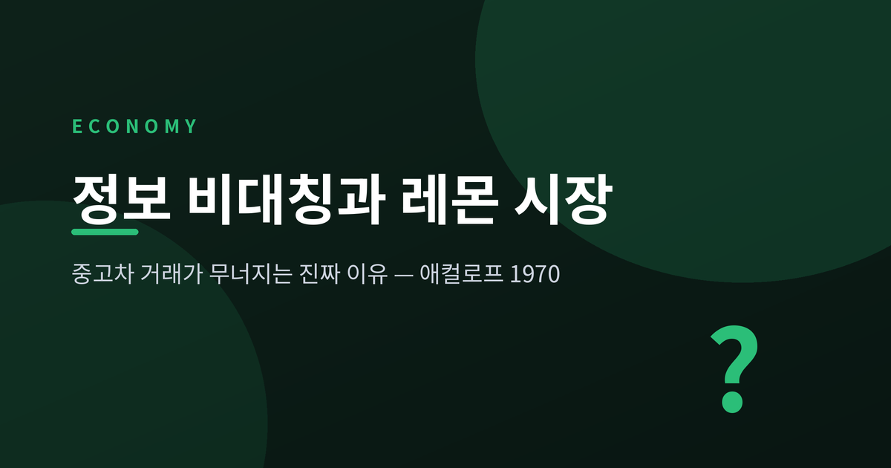
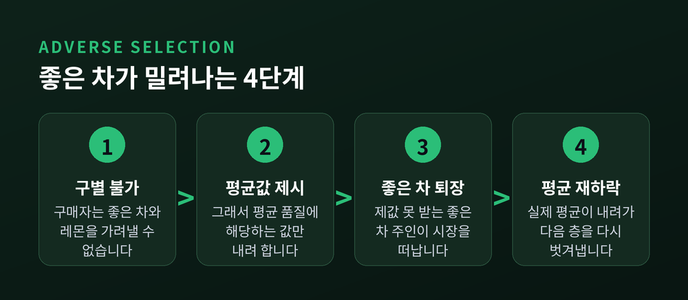
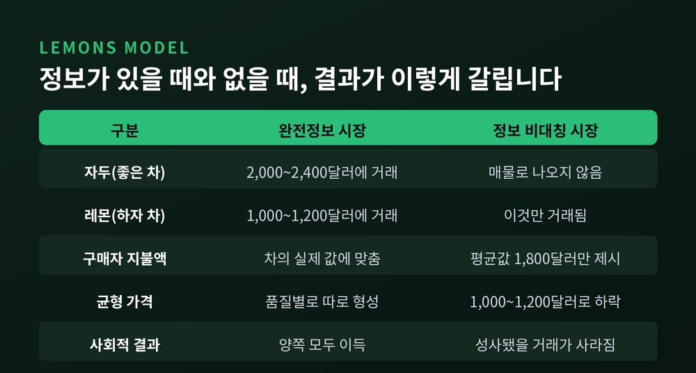
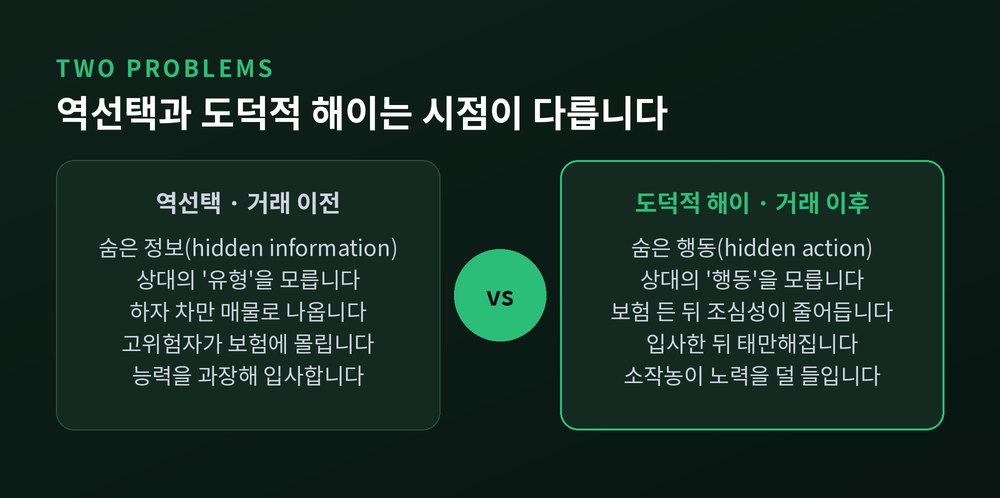
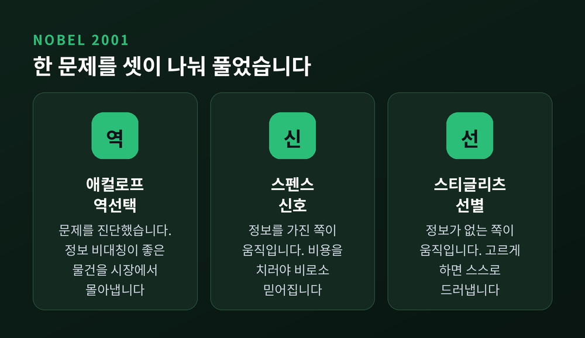
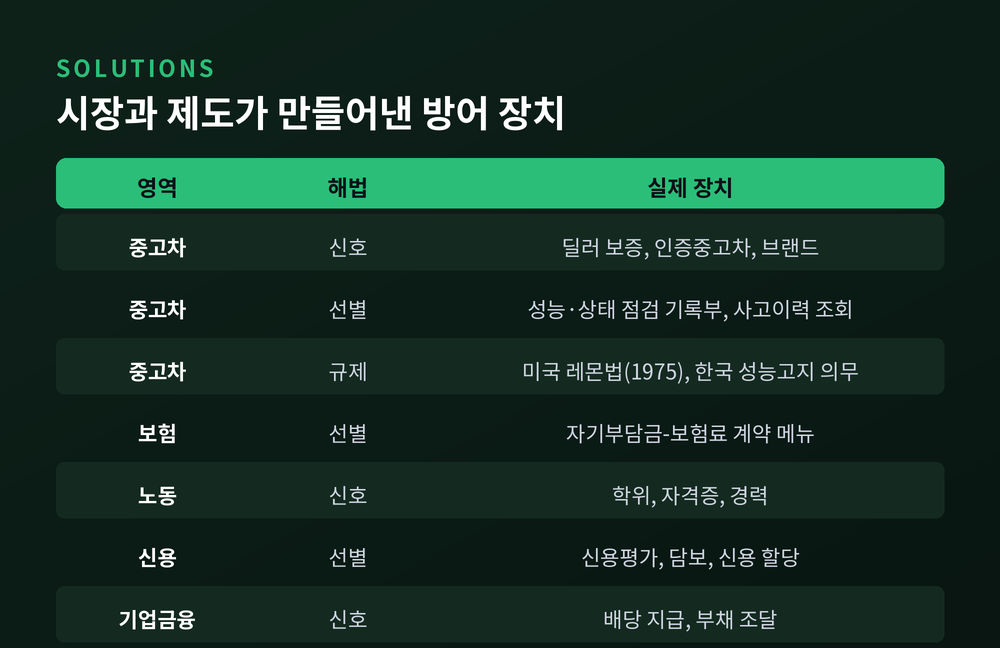

이번 글에서는 정보 비대칭과 레몬 시장을 정리해 보겠습니다. 중고차 한 대를 사고파는 일에서 출발해, 보험료 계약과 학위와 은행 대출까지 하나의 원리로 이어지는 이야기입니다. 애컬로프의 1970년 논문에서 시작해 신호와 선별이라는 해법, 그리고 이 이론을 의심하는 목소리까지 차례로 짚겠습니다.
핵심부터 말씀드립니다. 좋은 중고차가 시장에서 밀려나는 이유는 좋은 차가 부족해서가 아닙니다. "이 차는 좋다"는 사실을 상대가 믿을 수 있게 증명할 수단이 없기 때문입니다. 정보 비대칭의 병목은 품질이 아니라 증명입니다.
조지 애컬로프는 1967년부터 68년까지 인도 뉴델리의 인도통계연구소 기획부서에 있었습니다. 그곳에서 그는 인도의 농업과 신용 체계를 가까이서 지켜봤습니다.
한 가지가 눈에 걸렸습니다. 은행이 계속 늘어나는데도 지역 대금업자의 지배력은 그대로였습니다.
1960년대 인도의 지역 대부 시장 이자율은 대도시의 두 배 수준이었습니다. 경쟁이 부족해서가 아니었습니다. 도시에서 돈을 빌려 시골에 다시 빌려주려는 중개인은 차입자의 신용도를 알 수 없었습니다. 금리를 낮추면 상환 전망이 나쁜 사람들만 몰려듭니다. 그래서 금리가 내려가지 못했습니다.
이 관찰에서 나온 원고가 「레몬 시장: 품질 불확실성과 시장 메커니즘」입니다. 1967년 6월경 완성됐고, 『계간경제학지(QJE)』 84권 3호 488~500쪽에 실린 것은 1970년 8월입니다. 겨우 13쪽입니다.
가는 길은 순탄하지 않았습니다. 『아메리칸 이코노믹 리뷰』와 『리뷰 오브 이코노믹 스터디스』는 "맞기는 한데 흥미롭지 않다"며 돌려보냈습니다. 『저널 오브 폴리티컬 이코노미』 심사자는 틀렸다고 판정했습니다. 이유가 남습니다 — 이 논문이 옳다면 세상에 거래될 수 있는 재화가 하나도 없어야 한다는 것이었습니다.
네 번째 시도에서 실렸습니다. 그리고 2022년 2월 기준 학술 인용 39,275회를 넘겼습니다. RePEc 기준으로는 역대 가장 많이 다운로드된 경제학 저널 논문입니다. 노벨위원회는 이 글을 "정보경제학 문헌에서 단연 가장 중요한 연구"라고 적었습니다.
미국 속어로 레몬은 사고 나서야 하자를 알게 된 차를 뜻합니다. 반대편에는 자두(plum)나 복숭아(peach)가 있습니다. 상태 좋은 중고차입니다.
간단한 예를 들겠습니다.
레몬 주인은 1,000달러 아래로는 팔지 않습니다. 구매자는 레몬에 최대 1,200달러까지 낼 의사가 있습니다. 자두 주인은 2,000달러 아래로는 팔지 않고, 구매자는 자두에 최대 2,400달러까지 낼 수 있습니다.
여기까지만 보면 문제가 없습니다. 자두는 2,000~2,400달러 사이에서 거래되면 양쪽 모두 이득입니다.
그런데 구매자가 아는 것은 "매물의 절반이 레몬"이라는 사실뿐입니다. 그러면 구매자의 기대 지불액은 이렇게 계산됩니다.
0.5 × 1,200 + 0.5 × 2,400 = 1,800달러
자두 주인은 2,000달러 아래로는 팔지 않습니다. 1,800달러에는 나오지 않습니다. 남는 건 레몬뿐이고, 균형 가격은 1,000~1,200달러로 주저앉습니다. 완전정보였다면 성사됐을 거래가 통째로 사라진 것입니다.
품질이 세 단계면 더 잔인해집니다. 구매자 가치가 고품질 1,000달러, 중품질 500달러, 저품질 0달러이고, 판매자 유보가가 각각 800·400·0달러라고 해 보겠습니다.
평균은 500달러입니다. 800달러를 받아야 하는 고품질이 먼저 빠집니다. 이제 남은 건 중품질과 저품질이니 평균이 250달러로 내려갑니다. 400달러를 받아야 하는 중품질도 빠집니다. 저품질만 남습니다.
한 번 벗겨지고 끝나는 것이 아닙니다. 벗겨질 때마다 평균이 내려가고, 내려간 평균이 다음 층을 벗겨냅니다. 애컬로프의 원 모형에서는 이 되먹임이 끝까지 진행되어 수요가 0이 됩니다. 시장이 통째로 사라지는 것입니다.
경제학은 이 모습을 그레셤의 법칙에 빗댑니다. 악화가 양화를 몰아냅니다. 다만 그레셤의 원리는 본래 환율에 더 정확히 적용되므로, 변형된 유비로 보는 편이 정확합니다.

레몬 시장이 만들어지려면 다섯 가지 조건이 맞아떨어져야 합니다.
첫째, 구매자는 거래 전에 품질을 평가할 수 없고 판매자는 할 수 있습니다. 둘째, 판매자에게 나쁜 것을 좋은 것처럼 팔 유인이 있습니다. 셋째, 판매자에게 믿을 만한 공개 수단이 없습니다. 넷째, 품질이 연속적으로 분포하거나 평균 매물 수준이 충분히 낮습니다. 다섯째, 평판이나 규제, 보증 같은 품질 보증 장치가 없습니다.
이 중 셋째가 진짜 병목입니다.
좋은 차를 가진 사람도 "제 차는 정말 좋습니다"라고 말할 수는 있습니다. 문제는 레몬 주인도 똑같이 말할 수 있다는 데 있습니다. 누구나 할 수 있는 말은 정보를 전달하지 못합니다.
여기서 시야를 넓혀야 합니다. 애컬로프가 같은 논문에 함께 담은 사례는 중고차만이 아니었습니다. 고령자가 개인 건강보험에 가입하기 어려운 이유, 노동시장에서 소수자가 차별받는 이유가 나란히 실려 있습니다. 형태는 달라도 뼈대는 하나입니다. 한쪽만 아는 사실이 있고, 그것을 증명할 길이 없다는 것입니다.

두 개념을 섞어 쓰는 경우가 잦습니다. 갈라 두는 편이 좋겠습니다.
역선택은 거래 이전(ex ante)의 문제입니다. 상대의 유형이 숨겨져 있습니다. 그래서 '숨은 정보(hidden information)' 문제라고 부릅니다. 하자 있는 차만 매물로 나오는 것, 사고 위험이 높은 사람이 보험에 더 많이 가입하는 것, 지원자가 능력을 과장해 입사하는 것이 여기 속합니다.
도덕적 해이는 거래 이후(ex post)의 문제입니다. 상대의 행동이 숨겨져 있습니다. 그래서 '숨은 행동(hidden action)' 문제입니다. 보험에 든 뒤 조심성이 떨어지는 것, 입사한 뒤 태만해지는 것이 여기 속합니다.
흔한 오해 하나를 짚겠습니다. "보험 들었으니 험하게 몰아도 된다"는 태도는 도덕적 해이입니다. 역선택이 아닙니다. 레몬 시장은 어디까지나 역선택 이야기입니다.
숨겨진 것이 '무엇인가'와 '무엇을 하는가' — 이 차이가 해법도 갈라놓습니다.

애컬로프가 문제를 진단했다면, 마이클 스펜스는 정보를 가진 쪽이 무엇을 할 수 있는지 물었습니다.
1973년 「잡 마켓 시그널링」이 그 답입니다. 박사학위 논문에 기초한 글입니다.
스펜스는 노동시장의 교육을 봤습니다. 학위가 신호가 되는 이유가 흥미롭습니다. 교육이 쓸모 있는 기술을 가르치기 때문이 아닙니다. 능력이 낮은 사람에게 더 힘들기 때문입니다.
여기서 결정적인 조건이 나옵니다. 신호는 발신자마다 비용이 충분히 달라야만 작동합니다. 능력 높은 사람이 교육을 얻는 비용이 충분히 낮아서, 능력 낮은 사람이 스스로 낮은 교육 수준을 택하게 되어야 합니다. 그래야 고용주가 둘을 구별합니다.
신호 비용이 능력에 반비례해야 한다는 뜻입니다. 누구나 쉽게 낼 수 있는 신호는 신호가 아닙니다. 딜러의 보증이 신호가 되는 것도 같은 이유입니다. 레몬을 팔면서 무상 보증을 얹으면 수리비로 되돌아옵니다. 좋은 차를 파는 사람만 감당할 수 있는 비용이라, 비로소 믿어집니다.
신호가 성공하면 유형이 갈립니다. 이를 분리균형이라 부릅니다. 실패해서 모두가 같은 신호를 내보내면 아무 정보도 전달되지 않습니다. 합동균형입니다.
이 이론의 그늘도 함께 봐야 합니다. 스펜스는 '기대 기반' 균형이 여럿 존재할 수 있음을 지적했습니다. 그 결과 생산성이 똑같은데도 남성과 백인이 여성과 흑인보다 높은 임금을 받는 균형이 성립할 수 있습니다. 신호는 중립적인 도구가 아닙니다.
후속 연구는 신호의 적용 범위를 넓혔습니다. 비싼 광고와 광범위한 보증은 품질의 신호입니다. 공격적 가격 인하는 시장 지배력의 신호입니다. 배당도 그렇습니다. 배당은 이중과세 탓에 자본이득보다 세금이 무거운데요, 그럼에도 지급합니다. 시장이 호재로 해석해 주가가 오르고, 그 상승분이 추가 세금을 보상하기 때문입니다.
조지프 스티글리츠는 반대편에서 접근했습니다. 정보가 없는 쪽은 무엇을 할 수 있는가.
마이클 로스차일드와 함께 쓴 1976년 논문 「경쟁적 보험시장의 균형」이 그 답입니다. 『QJE』 90권 4호 629~649쪽입니다.
보험사는 고객의 사고 위험을 모릅니다. 물어봐도 소용없습니다. 다들 자기는 안전하다고 답할 테니까요.
그래서 묻지 않습니다. 대신 계약 메뉴를 내놓습니다.
저위험자는 사고가 안 날 걸 압니다. 자기부담금은 어차피 낼 일이 없으니 A안을 골라 보험료를 아낍니다. 고위험자는 사고가 날 걸 압니다. 자기부담금이 무서우니 보험료를 더 내고 B안을 고릅니다.
선택 자체가 고백이 됩니다. 선별균형에서는 모든 개인이 진실을 말하도록 유도됩니다. 노벨위원회가 "왜 보험사는 자기부담금을 높이는 대신 보험료를 낮춰주는 계약 메뉴를 제시하는 것이 유리한가"를 수상 사유의 예시 질문으로 꼽은 이유입니다.
다만 한계를 분명히 해야겠습니다. 로스차일드와 스티글리츠는 균형이 아예 존재하지 않을 가능성도 함께 제시했습니다. 집이 탈 확률을 구매자만 아는 시장에서 위험이 다른 사람들이 섞여 있으면, 균형에서 보험이 존재하지 않는 결과가 나올 수 있습니다. 고위험자가 저위험자에게 외부성을 부과하기 때문입니다. 둘을 분리할 수만 있다면 저위험자는 마땅히 싼 보험을 받아야 하는데, 그 분리가 언제나 가능하지는 않습니다.
스티글리츠는 같은 렌즈를 신용시장에도 댔습니다. 앤드루 와이스와 함께 그는 부실대출 손실을 줄이려면 금리를 올리기보다 대출량 자체를 제한하는 편이 최적일 수 있음을 보였습니다. 금리를 올리면 위험한 차입자만 남기 때문입니다. 애컬로프가 인도에서 본 그 장면이 이론으로 정리된 셈입니다.
2001년 노벨경제학상은 애컬로프, 스펜스, 스티글리츠 세 사람에게 돌아갔습니다. 수상 사유는 한 줄입니다. "정보 비대칭 시장에 대한 분석."
세 사람의 자리가 정확히 갈립니다. 애컬로프는 문제를 진단했습니다. 스펜스는 정보를 가진 쪽이 움직이는 해법을 냈습니다. 스티글리츠는 정보가 없는 쪽이 움직이는 해법을 냈습니다.
노벨위원회가 수상 발표문 첫머리에 던진 질문들이 인상적입니다. 왜 제3세계 대부 금리는 지나치게 높은가. 왜 사람들은 좋은 중고차를 살 때 개인이 아니라 딜러를 찾는가. 왜 기업은 세금이 무거운 배당을 지급하는가. 왜 지주는 소작농과의 계약에서 수확 위험을 전부 떠안지 않는가.
서로 다른 세계의 질문처럼 보입니다. 답은 하나입니다.

애컬로프 논문에서 자주 잊히는 대목이 있습니다. 그는 시장의 붕괴만 말하지 않았습니다.
경제 주체는 정보 문제의 폐해를 상쇄할 강한 유인을 가진다 — 이것이 논문의 또 다른 핵심 통찰입니다. 그는 많은 시장 제도가 정보 비대칭을 풀려는 시도에서 생겨난 것으로 볼 수 있다고 썼습니다. 딜러의 보증, 브랜드, 체인점, 프랜차이즈, 각종 계약 형태가 그가 든 예입니다.
규제도 뒤따랐습니다. 논문 발표 5년 뒤인 1975년, 미국은 연방 레몬법(매그너슨-모스 보증법)을 제정했습니다. 통상 같은 하자로 네 번 이상 수리했는데도 문제가 지속되면 레몬으로 판정될 수 있습니다. 다만 그 하자가 차량의 사용·가치·안전을 실질적으로 저해해야 합니다. 레몬으로 환매된 차는 소유권 원부에 낙인이 찍히고, "있는 그대로 판매"라고 써 붙였다 해서 딜러가 고지 의무를 면하지 못합니다.
한국에도 장치가 있습니다. 자동차관리법 시행규칙 제120조에 따라 중고차 매매사업자는 성능·상태점검을 실시하고 그 기록부를 구매자에게 의무적으로 고지해야 합니다. 고지하지 않거나 거짓으로 점검·고지하면 자동차관리법 제80조 제6호·제7호에 따라 2년 이하의 징역 또는 2천만원 이하의 벌금에 처합니다. 가격조사·산정에는 보험개발원의 차량기준가액이 기준으로 쓰입니다.
빈틈도 있습니다. 사고이력 인정은 사고로 주요 골격 부위의 판금·용접수리 및 교환이 있는 경우로 한정됩니다. 소비자가 '사고'라고 느끼는 범위와 기록부가 '사고'로 적는 범위가 같지 않습니다.

여기까지가 교과서의 이야기입니다. 학계가 이 이론을 만장일치로 받아들인 것은 아닙니다.
조지 호퍼와 마이클 프랫은 1987년 논문에서 "레몬 시장이 중고차에 실제로 존재하는지에 대해 경제학 문헌은 갈라져 있다"고 명시했습니다. 이들은 미국 일부 주의 '알려진 하자 고지 규정'이 실효가 없었다는 결과를 내놨습니다. 그 규정이 있는 주의 중고차 품질이 없는 이웃 주보다 유의미하게 낫지 않았기 때문입니다.
에릭 본드는 1982년 『아메리칸 이코노믹 리뷰』에 중고 픽업트럭을 대상으로 레몬 모형을 직접 검정한 논문을 실었습니다. 김재철은 1985년 같은 학술지에서 모형의 가정 하나를 문제 삼았습니다. 애컬로프는 구매자와 판매자가 고정되어 있다고 봤지만, 중고차 시장에서는 산 사람이 곧 파는 사람이 됩니다. 거래비용이 낮을 때 그 교환 가능성을 모형에 넣으면 레몬 원리는 성립하지 않는다는 것이 그의 결론입니다.
다만 해석이 갈리는 지점이 있습니다. 현실에서 레몬 효과가 약하게 나타난다는 발견은 모형의 반증일까요, 아니면 모형이 예측한 방어 장치가 이미 작동하고 있다는 증거일까요. 애컬로프 자신이 "시장은 문제를 푸는 제도를 만들어낸다"고 썼습니다. 저는 이 물음이 아직 열려 있다고 생각합니다.
이론의 확장도 겸손합니다. 브렌던 데일리와 브렛 그린은 2012년 『이코노메트리카』에서 '뉴스'가 도착하는 상황을 모형에 넣었습니다. 거래 붕괴라는 비효율은 완화됐습니다. 그런데 새로운 비효율이 생겼습니다. 뉴스가 많아질수록 거래가 지연되는 현상입니다. 정보가 많아지면 비효율이 줄어든다는 명제는 부분적으로만 참이었습니다.
류드밀라 자볼로키나 연구팀은 2020년 블록체인을 검토했습니다. 정보의 신뢰성이 올라가 차량 가치 평가의 정확도가 개선됐습니다. 그러나 저장된 정보의 이점은 구매자의 해석 능력에 제한된다는 것이 이들의 결론입니다. 자동차를 모르는 소비자도 이해할 수 있어야 실효적인 의사결정 장치가 됩니다. 기록이 있다고 신뢰가 생기는 게 아닙니다. 읽을 수 있어야 신뢰가 생깁니다.
숫자로 보겠습니다.
전국경제인연합회가 2020년 11월 발표한 조사가 있습니다. 모노리서치에 의뢰해 전국 만 19세 이상 남녀 1,000명에게 물었습니다.
애컬로프의 다섯 가지 조건과 나란히 놓아 보십시오. 거의 그대로 겹칩니다.
예전에는 매매단지에서 딜러와 흥정하는 것이 중고차를 사는 유일한 길이었습니다. 지금은 대형 플랫폼과 인증중고차가 그 자리를 파고들고 있습니다. 현대차와 기아 같은 완성차 대기업이 정밀 성능검사와 수리를 거친 차량을 공급하는 방식입니다. 소비자가 데이터와 책임 보증을 제공하는 쪽으로 발길을 옮기고 있다는 것이 언론의 평가입니다.
애컬로프의 언어로 옮기면 이것은 신호와 선별의 결합입니다. 대기업은 브랜드와 보증이라는 비싼 신호를 걸었습니다. 국가는 성능점검 기록부라는 선별 장치를 의무화했습니다.
그렇다고 다 풀린 것은 아닙니다. 대기업이 시장을 독식할 것이라는 우려가 함께 제기되고 있습니다. 인증중고차가 실제로 얼마나 시장을 바꿨는지 보여주는 신뢰할 만한 수치는 아직 확인하지 못했습니다. 위 조사도 2020년 자료입니다. 그 이후 인식이 얼마나 달라졌는지는 별도의 확인이 필요합니다.
끝으로 한 마디만 더 드리겠습니다.
레몬 시장 이론이 오래 살아남은 이유는 중고차 때문이 아닐 겁니다. 우리가 파는 것이 대부분 상대가 확인할 수 없는 것이기 때문일 겁니다. 이력서에 적은 능력이 그렇고, 면접에서 말한 성실함이 그렇습니다. 대출 신청서에 쓴 상환 계획도 그렇습니다.
그래서 우리는 값을 치릅니다. 학위를 따고, 자격증을 모으고, 보증을 걸고, 자기부담금을 감수합니다. 편해서가 아닙니다. 말은 공짜라서 아무것도 증명하지 못하기 때문입니다.
"믿음은 비용을 치른 쪽에만 붙는다."
애컬로프의 논문은 네 번 거절당했습니다. 사소하다는 이유였습니다. 그 사소한 물음이 반세기 뒤 중고차 매매단지와 보험 약관과 대학 졸업장을 한 줄로 꿰어냈습니다. 좋은 질문이 원래 그렇게 생겼는지도 모르겠습니다.